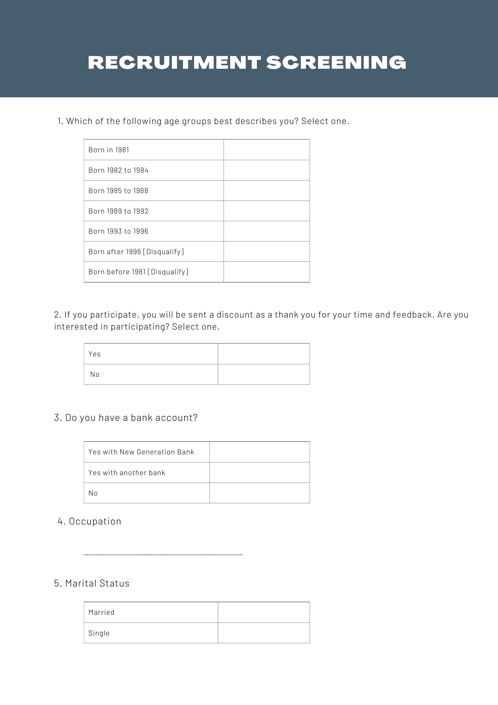
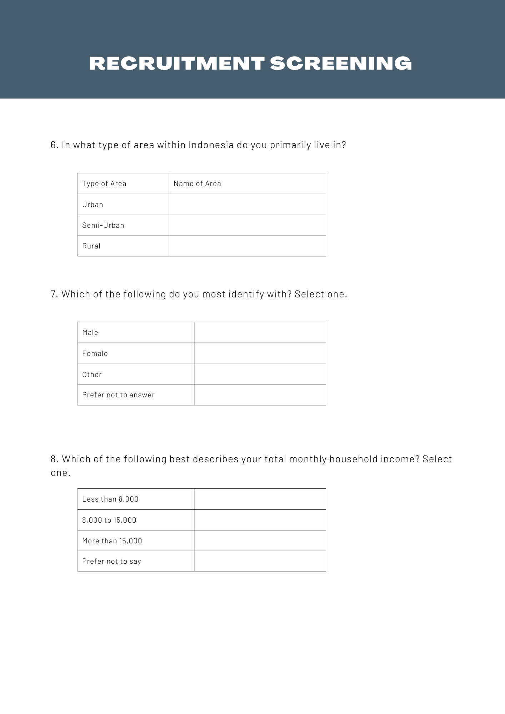
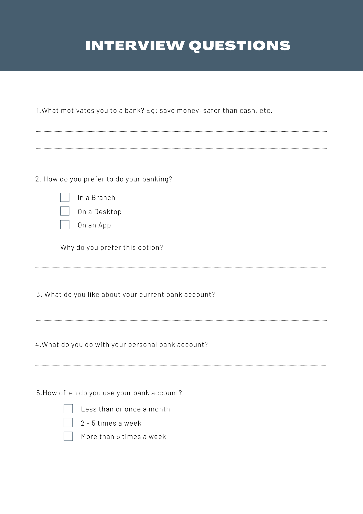

Detailed Research Activities
Literature & Database Research
Timeline: 3-4 days
Roles & Responsibilities: Literature on current banking behaviors online and reviewing statistics on current customer behavior
Key Questions to ask:
- ❖ How do our current customers do their banking? devices, in person?
- ❖ How do customers bank; spend/save habits and on what?
- ❖ How many customers does the bank have?
- ❖ What are the current global and local banking trends?
- ❖ What do (millennials) want from their bank, from public online research, social media, review sites etc.
Quantitative & Qualitative Research
Timeline: 7 days
Roles & Responsibilities: conduct online surveys ,social media polls and interviews.
Key Questions to ask:
- ❖ What are your motivations for banking? save money, safer than cash?
- ❖ How do you prefer to bank? desktop, in person, on an app?
- ❖ What draws you to a bank? popularity of the bank, low fees, services offered?
- ❖ What services would you like in the ideal bank?
Review Findings
Timeline: 3 days
Roles & Responsibilities: review data from research methodologies
Key Questions to ask:
- ❖ What are the patterns of the current customer’s attitudes and behaviors?
- ❖ Where can N.G.B, improve based on findings?
- ❖ What are banking trends that customers want and need.
- ❖ What trends could fit within the bank’s mission and values but still be innovative ?
Screening
Once the particpant passes the screening process,a nondisclosure agreement is sent. Once completed and returned then the participant schedules a interview.


Interview Questions
